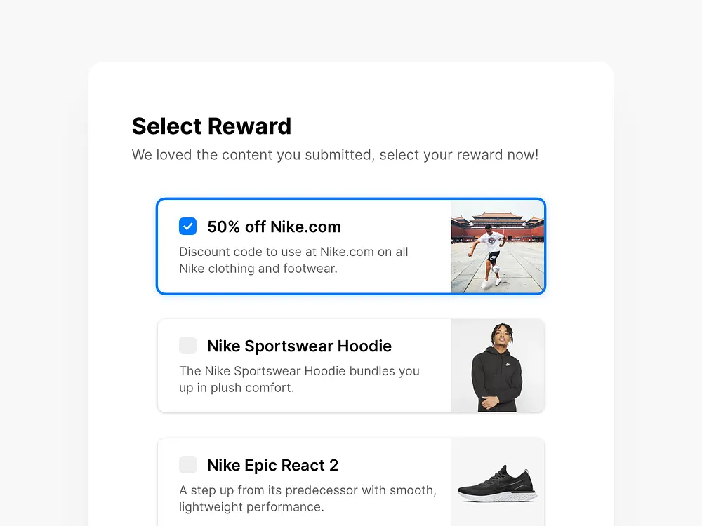
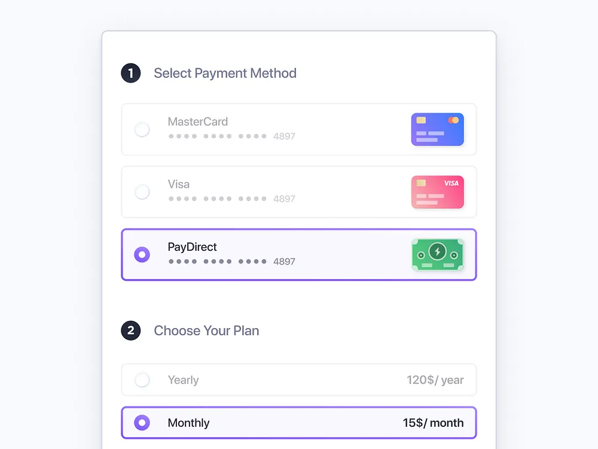
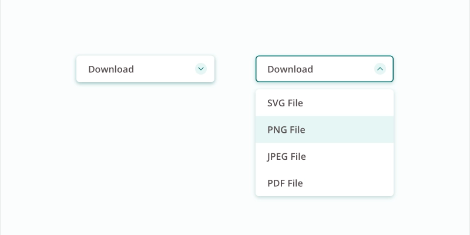
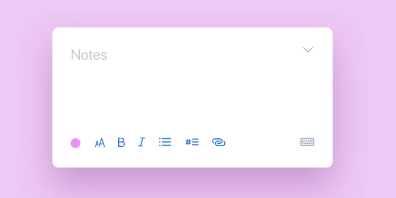
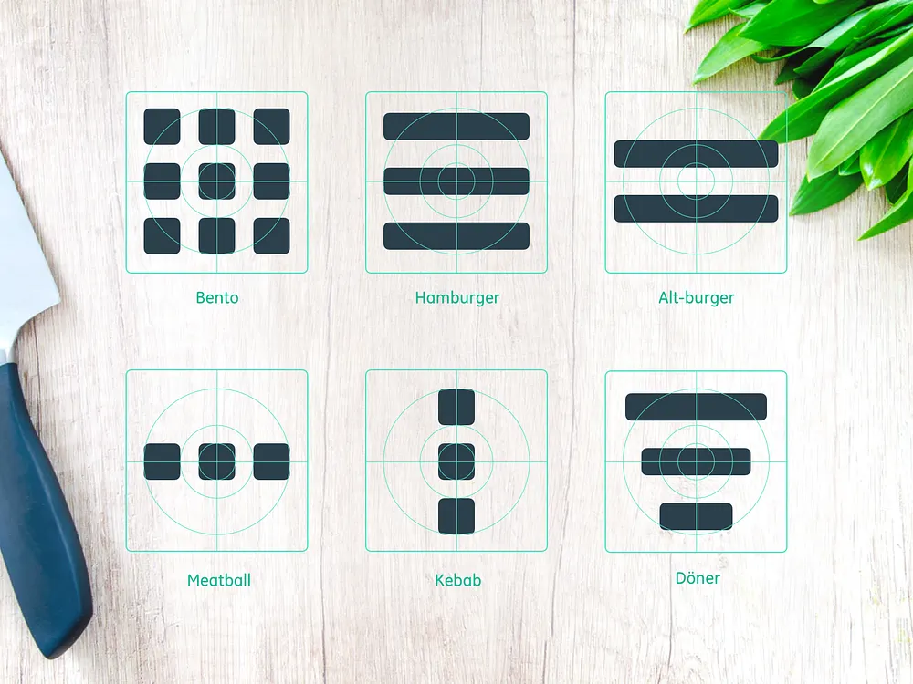
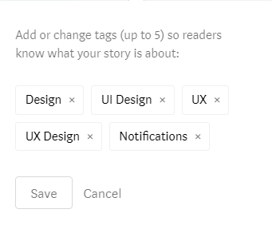
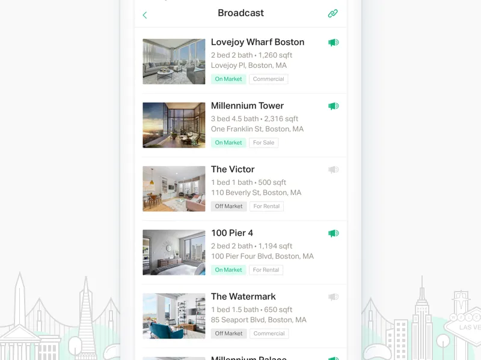
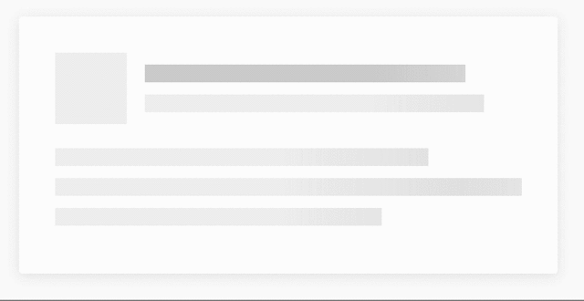
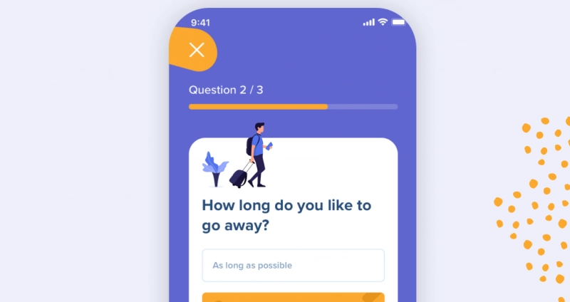
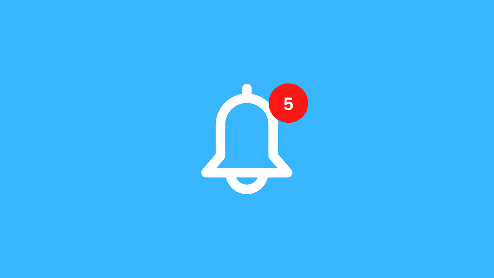

👩🏫 Les composants d'interface utilisateur
Les composants de l’interface utilisateur, c’est quoi ?
Lorsque vous faites le design d’une interface, vous devez tout faire pour garder une cohérence et une logique dans vos choix. En tant qu’utilisateurs, nous nous sommes familiarisés avec certaines mécaniques. Par exemple, pour la plupart d’entre nous, nous savons qu’une icône d’avion en papier situé à proximité d’un champ de texte signifie qu’au clic/appui, nous enverrons le message saisi, et ce même sans qu’un libellé “envoyer” ne soit accolé.
S’assurer de faciliter la vie de nos utilisateurs les aide ainsi à réaliser les actions avec plus d’efficience et de satisfaction.
🤓 A la fin de cette quête, tu sauras :
✅ ce que sont les composants d'interface utilisateur, ✅ quels sont les principales catégories et types de composants, ✅ comment et dans quel but les utiliser.
Les composants, ces briques de Lego 🧱
Les composants d’interface utilisateur correspondent à tous les éléments visuels que l’on pourrait “découper” dans une interface. Cela comprend, par exemple :
- les inputs, ou éléments avec lesquels nous pourrons effectuer des actions et des choix : checkboxes, boutons radio, listes déroulantes, boutons, switch, champs textes, date pickers…
- les icônes,
- les composants de navigation : menus burger & co, fil d’ariane, carousels, champs de recherche, pagination, tags, tab bars/onglets, listes…
- les composants d’information : tooltips, loaders, barres de progression, notifications, pop-ups/fenêtres modales…
- les conteneurs : zones dépliables/accordéons, zones modulables, cartes…
Et ces composants, on va les assembler comme des Legos. C’est cette construction qui donnera les écrans et pages de notre interface utilisateur, en suivant la charte graphique (ou plutôt, design system) établie.
Les inputs
Checkboxes

Harry BurnsCes petites coches permettent, souvent dans un formulaire ou une liste, de sélectionner un ou plusieurs choix (ex : choix de filtres dans une recherche). Les checkboxes sont aussi utilisables pour des options booléennes de par leur fonction binaire (ex : accepter ou refuser des conditions)
Boutons radio

Simon LürwerComme les checkboxes, les boutons radios souvent trouvés dans les formulaires permettent d’effectuer un choix. La grande différence, hormis leur affichage traditionnel en rond, est qu’ils offrent un choix UNIQUE entre plusieurs options (ex : couleur d’un article)
Boutons
 Gal Shir
Gal Shir
C’est l’un des fondamentaux de l’interface utilisateur. Le plus souvent accompagné d’un libellé d’action, d’une icône ou les deux, il propose à l’utilisateur la réalisation d’une action (envoyer un formulaire, valider une opération…)
Listes déroulantes

Maaike KoolbergenUn encart, traditionnellement accompagné d’une petite flèche, qui au clic/appui offre une liste de choix qui se “déroule”.
Elles sont à utiliser avec précaution, car elles peuvent dégrader l’expérience utilisateur si elles sont mal exploitées. Par exemple, lorsque peu d’options sont disponibles, on pourra leur préférer des boutons radio. Moins de clics, toutes les options directement visibles…
Pour aller plus loin, vous pouvez regarder la conférence "You Know What? Fuck Dropdowns." : https://www.youtube.com/watch?v=hcYAHix-riY
Switches/toggle
 Atlassian
Atlassian
Proches des checkboxes dans leur fonctionnement “on/off”, en termes d’expérience utilisateur ces petites barres coulissantes ne seront néanmoins pas utilisées pour faire des choix multiples mais plutôt à privilégier pour des choix d’activation/désactivation d’options.
Champs textes

Yaroslav SamoilovRien de plus simple : une zone dédiée à la saisie de texte. Elle peut être en une ligne (input), en plusieurs (textarea), signifiée par un cadre, un fond … Simplistes, on s’assurera néanmoins de les soigner : un champ pour saisir un nombre à deux chiffres sera bien différent visuellement d’un champ pour envoyer un message privé !
Date/time pickers
 Edoardo Mercati
Edoardo Mercati
Trouvable lorsque l’on doit choisir une date ou une heure dans une interface, on pourra les retrouver sous forme de petits calendriers en tooltip sur ordinateur ou en boîte modale sur smartphone.
Icônes
Anton Klapko
Ces illustrations simplifiées sont utilisables pour la navigation ou donner une information. Il est préférable de les penser en vectoriel, et qu’elles puissent être affichables en tout petit. Elles se doivent d’être explicites, représentatives de l’action ou de l’information pour aider l’utilisateur à se repérer et naviguer dans l’interface.
 Eddie Lobanovskiy
Eddie Lobanovskiy
Elles peuvent être interactives dans un contexte de navigation/opérations ou simplement informatives (attention à ne pas perdre les utilisateurs entre les icônes interactives et informatives !)
Navigation
Menus burger/bento/döner...

Alex LockwoodEst-ce en référence au "menu" que tous ont un petit nom de plat ? Sûrement ! Toujours est-il qu’on trouve dans cette catégorie un ensemble de pictogrammes de menus aux significations différentes :
-
Le menu hamburger, universel, souvent positionné en haut à gauche, est un set de trois lignes indiquant qu’un menu liste est disponible au clic/appui.
-
Le menu döner, composé de lignes se réduisant en tailles, est plutôt utiliser pour des systèmes de filtres.
-
Le menu bento, quant à lui, représente souvent un menu dont les éléments sont disposés en forme de grille.
-
Le menu kebab : les trois petits points représentant généralement que des options complémentaires sont disponibles pour la page/écran ou un de ses sous-éléments.
Fil d’ariane
 Sharon Olorunniwo
Sharon Olorunniwo
Celui qu’on appelle “breadcrumb” en anglais : souvent représenté par une succession de liens entrecoupée par des chevrons, il permet à l’utilisateur de savoir où il en est dans un process, ou alors de lui indiquer les catégories/sous-catégories d’un produit par exemple, et lui offrir la possibilité de remonter dans ce fil.
Carrousels
Une succession d’encarts/images défilantes pouvant emmener directement vers des endroits clés d’un site, ou que l’on souhaite délibérément mettre en avant (exemple : une promotion, une news importante…).
Champs de recherche
Jan Hoffman
Dérivés d’un champ texte, ils s’accompagnent souvent d’une petite loupe, et fréquemment d’un menu contextuel proposant rapidement des pages/écrans/résultats en lien avec la recherche (typiquement : Google !)
Pagination
Oleg Frolov
Liste de numéros ou de points en bas de pages, pouvant être accompagnées de raccourcis type “première page”, “dernière page”, ils sont utilisés souvent pour des affichages de listes de contenus : résultats de recherches, produits, actus… Niveau expérience utilisateur, on peut trouver l'alternative du “scroll infini”, chargeant automatiquement de nouveaux résultats lorsque l’on atteint le bas de page (YouTube).
Tags

Alex ZlatkusIls permettent de trouver du contenu dans des thématiques liées par des mots-clés. Leur avantage est leur transversalité et la possibilité de les combiner : on peut sélectionner une catégorie comme une propriété et un mot-clé associé à un produit par exemple. Selon les contextes, on peut proposer la création de tags personnalisés à l’utilisateur.
Tab bars/onglets
 Hoang Nguyen
Hoang Nguyen
Contenant un certains nombre de raccourcis, elle permet aux utilisateurs de se déplacer rapidement entre les principales sections d’un système (souvent utilisée en bas des applications via de simples icônes)
Listes

Emily FengUne succession d’”items”, horizontale, verticale ou en grille, qui peut être organisée selon de nombreuses possibilités : alphabétique, numérique, chronologique, aléatoire…
Information
Tooltips

Aussi appelées “Infobulles” en français, elles permettent d’afficher des conseils/infos complémentaires au survol d’un élément, voire parfois d’effectuer des actions contextuelles simples rapidement.
Loaders
 Kickass
Kickass
On retrouvera ici tous les composants permettant d’indiquer à l’utilisateur qu’un chargement de contenu/une opération est en cours, l’invitant à patienter : les traditionnels petits sabliers, barres de chargement… mais aussi des formes plus créatives, comme des animations, ou plus user-friendly, comme le "skeleton screen", une structure squelette qui représente la disposition du futur contenu :

Barres de progression

Les barres de progression aident les utilisateurs à visualiser où ils en sont dans une série d'étapes. On en trouve par exemple lors des achats, marquant les différentes étapes qu'un utilisateur comme la facturation et l'expédition.
Notifications

Vous trouverez ces petits points partout sur les interfaces aujourd'hui, possiblement accompagnés de chiffres ou de glyphes. Ils informent facilement d’une nouveauté sans être sur l’écran concerné, ni passer par un moyen envahissant : message, erreur, réussite, actu…
Pop-up/fenêtre modale
 Joshua Krohn
Joshua Krohn
Une fenêtre modale est une petite fenêtre contenant du contenu ou un message qui va venir se superposer sur l’écran/page. Elle est souvent accompagnée d’un layout, un arrière-plan semi-opaque, pour recentrer l’attention sur elle le temps qu’elle soit refermée. Elle peut servir dans de nombreux cas : on la trouvera souvent pour confirmer une action sensible (ex : “Voulez-vous vraiment supprimer cet élément” ?)
Conteneurs
Zones dépliables/accordéons
Louvrissime
Les accordéons permettent aux utilisateurs de développer et de réduire des sections de contenu. Ils aident à naviguer rapidement dans entre les infos et permettent d'inclure de grandes quantités d'informations dans un espace limité.
Cartes
 Crank
Crank
Les cartes, ou cards, sont de petits encarts rectangulaires ou carrés qui contiennent différents types d'informations, sous la forme de boutons, de texte, de médias... Les cartes agissent comme un point d'entrée pour l'utilisateur, affichant différents types de contenu côte à côte sur lesquels l'utilisateur peut ensuite cliquer. Les cartes sont un excellent choix de conception d'interface utilisateur si vous souhaitez utiliser intelligemment l'espace disponible et présenter à l'utilisateur plusieurs options de contenu, sans les faire défiler dans une liste traditionnelle.
En conclusion
Cette liste est loin d'être exhaustive : tout élément imbricable dans une interface est un composant ! Pour aller plus loin, nombreux frameworks en lignes présentent leur librairie de composants :
https://m3.material.io/components https://ionicframework.com/docs/components https://atlassian.design/components/
Des presets de composants sont aussi proposés sous de nombreux formats de template : Figma, Xd, voire même Illustrator...
☝️ Résumé
- Les composants d'interface utilisateur sont des éléments "sécables" de l'interface que l'on assemble pour créer les pages/écrans.
- Il en existe de nombreux types, de nouveaux voient le jour régulièrement, et tous ont des fonctions différentes : permettre une action, naviguer, donner une information...
- On peut les rassembler dans des kits que l'on appellera des librairies de composants, utilisables à souhait pour homogénéiser les interfaces.